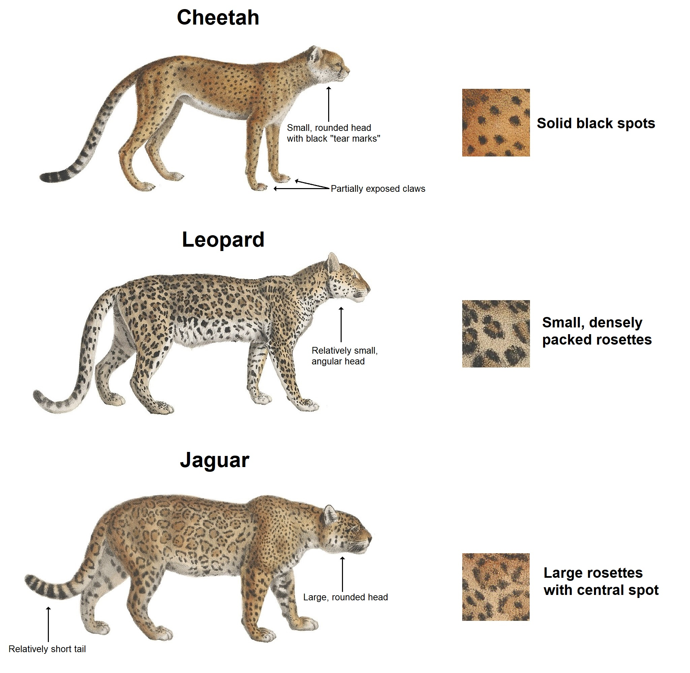

Jaguars are the third largest big cat in the world, with only tigers and lions being larger. They stand up to 68 - 75 cm tall, and normally weigh around 56 - 97 kg. Female jaguars tend to be around 10-20% smaller than males. They also have the shortest tails of any big cat, theirs usually being around 45 - 75cm.
Their coat ranges from a pale yellow to tan or reddish-yellow, with a white underside covered in black spots. Spots and shapes vary. These patterns serve as camouflage in areas that have dense vegetation & patchy shadows.


Jaguars closely resemble leopards, but leopards tend to be stockier and have squarer heads. The rosettes on the jaguar's coat are larger, darker, fewer in number, and tend to have a small sot in the middle. They have powerful jaws and the third-highest bite force of all felines (after the tiger and lion). 